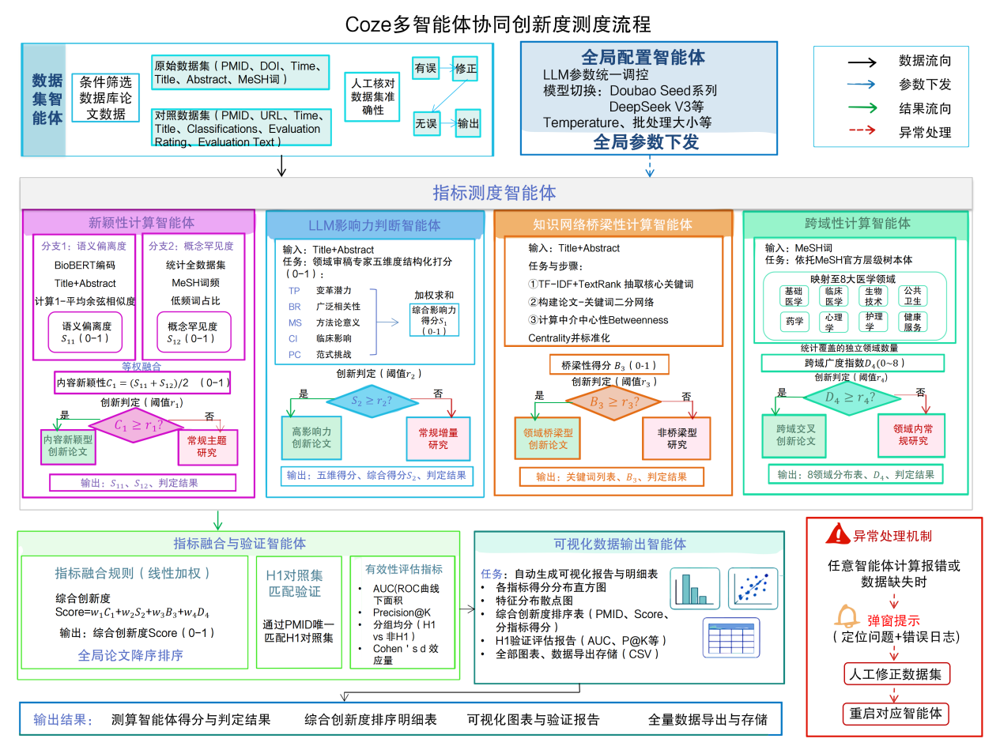

面向科研文献创新度测度的多智能体协作系统：8 类智能体分工协同，覆盖数据接入、四路并行测度、融合验证到可视化输出，并带完整的异常处理与参数调度闭环；配套零后端依赖的纯前端可视化引擎。实现覆盖架构设计、服务端到可视化的全链路。
这不是一个单模型调用，而是一套有分工、有调度、有反馈纠错的智能体系统。下面按四层展开每一类智能体的职责与内部算法。

数据接入层完成多源异构数据的清洗与人工核对闭环；全局配置智能体统一调控 LLM 参数并下发；四路指标智能体并行推理；融合层做可解释加权与 H1 验证；输出层自动生成报告与图表。四条彩色信号流（数据 / 参数 / 结果 / 异常）清晰地分开控制面与数据流。
多源异构数据 + 全局参数下发
接入条件筛选数据库（PMID / DOI / Time / Title / Abstract / MeSH）与权威对照集（含 Evaluation Rating 等），并做人工核对闭环：出错即修正后回写，保证标注质量。
统一调控 LLM 参数：模型切换（Doubao Seed 系列、DeepSeek V3 等）、Temperature、批处理大小，向全链路下发参数，避免各智能体配置漂移。
四个独立智能体并行推理，可单独替换模型
BioBERT 编码标题摘要算语义偏离度 S11，MeSH 词频算概念罕见度 S12，等权融合得内容新颖性 C1，再按阈值判定。
以领域审稿专家视角做五维结构化打分：变革潜力、方法意义、广度影响、临床影响、范式挑战，加权得综合影响力并按阈值判定。
TF-IDF + TextRank 抽取核心关键词，构建论文—关键词二分网络，计算中介中心性并标准化得桥梁性得分 B3，识别跨领域桥梁型创新。
将 MeSH 词映射至 8 大学科领域，统计独立领域数量得跨域广度指数 D4（0–8），按阈值区分跨域交叉与领域内常规研究。
可解释加权 + 权威基准校验
按线性加权融合四路信号：Score = w1·C1 + w2·B2 + w3·B3 + w4·D4，输出全局创新度排序；通过 PMID 唯一匹配 H1 专家标注集做验证，并计算 ROC-AUC、Precision@K、分组分布与 Cohen's d 效应量。权重可配置（grid / 等权 / CRITIC / PCA / entropy 多方案对比）。
自动报告 + 异常自愈闭环
自动生成各指标分布直方图、特征散点图（PMID / Score / 创新类别）、分组箱线图、H1 验证报告（AUC、P@K），并导出全量 CSV 与图表文件。
任一智能体报错或数据缺失时，弹窗定位并输出错误日志 → 人工修正数据集 → 仅重启对应智能体，不必重跑全链路。这是保证系统长期可用的关键设计。
不只是跑通实验：从全栈工程、多智能体编排、数据管道到可视化引擎，链路自主实现，可直接部署上线。
基于 Next.js 16 与 React 19 构建，TypeScript 全量类型约束，pnpm + ESLint + tsc 工程化校验。
基于 Coze SDK 编排 8 类智能体，设计并行推理、参数下发、融合调度与异常回滚机制。
处理上万篇文献与专家标注，完成四信号结果对齐、清洗与结构化，pmid 全量一一匹配。
零图表库依赖，用原生 SVG / Canvas 实现桑基图、ROC、雷达、箱线、Precision@K 等复杂图表。
嵌套五折交叉验证 + 折外预测，与 TF-IDF、BioBERT、SBERT、LDA 等多基线对比，保证结论可靠。
展示层为纯静态资源，无需服务器与后端，可直接托管于 GitHub Pages，打开即用、零运维成本。
在 H1 Connect 权威专家基准上，判别性能优于 TF-IDF、BioBERT、SBERT、LDA 等主流基线；多信号融合相较单信号带来显著提升。
上面的架构不是概念图——星型编排、消息协议、数据泄漏防护、融合算法、万篇级性能调优，全部有逐行可验证的实现。技术深度页给出完整的实现细节。